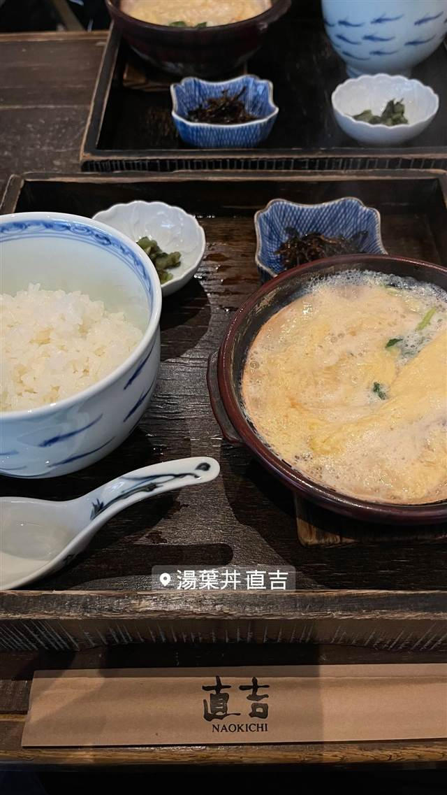
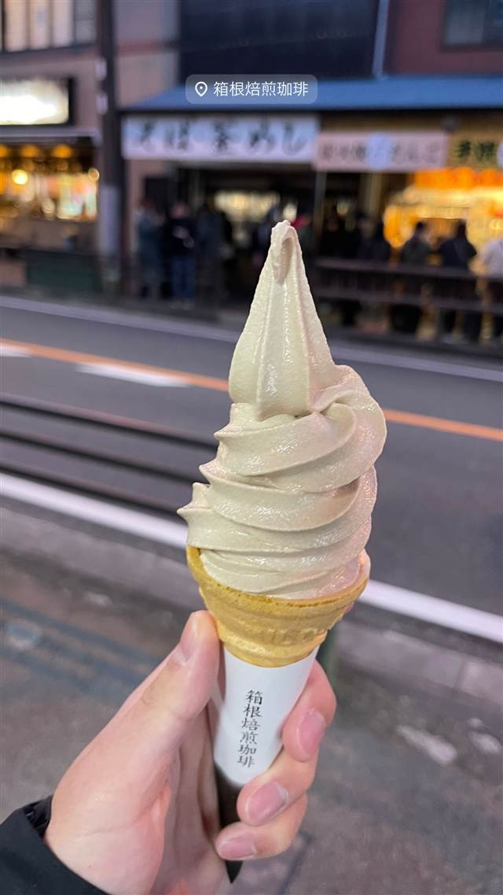
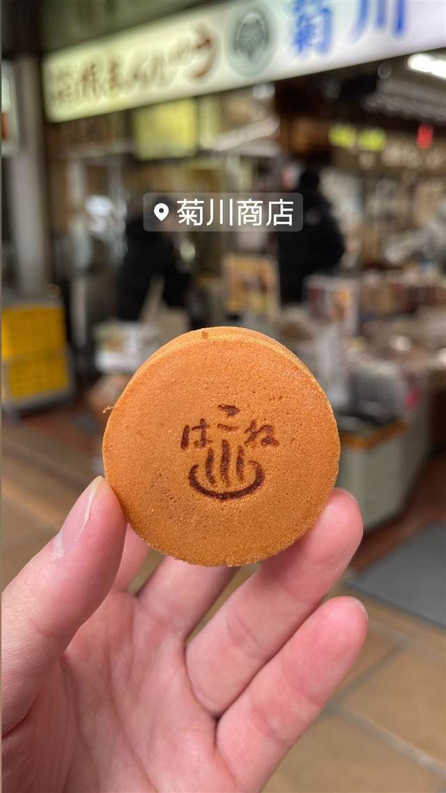
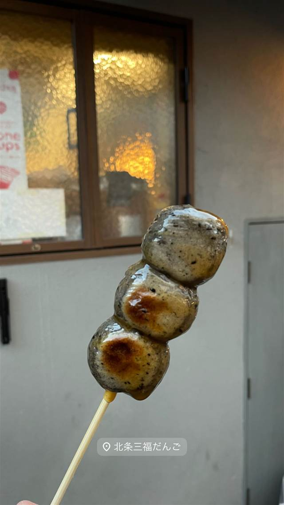
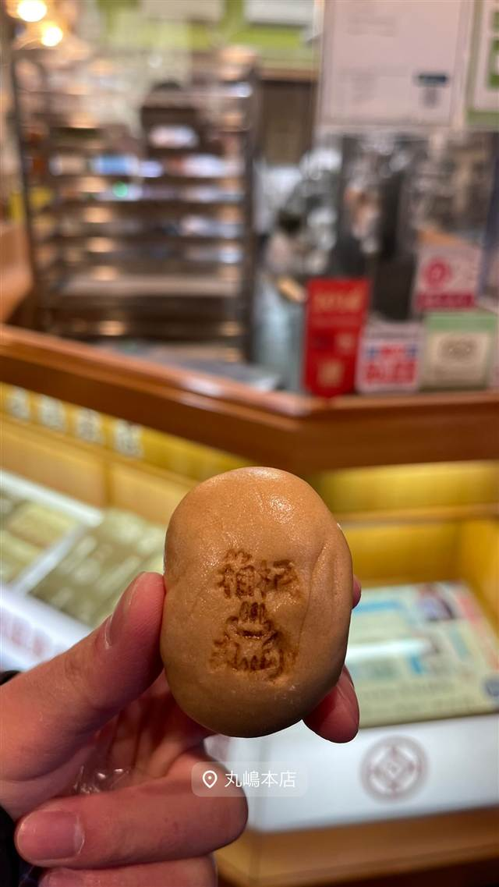
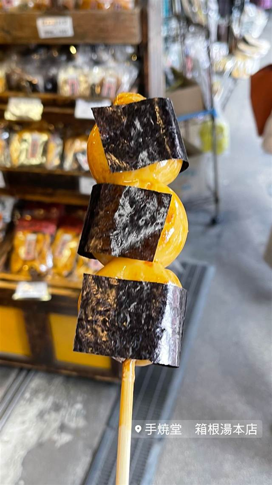

湯葉丼 直吉
北条の姫伝説の名水で作る生湯葉、名物の湯葉丼
湯葉丼 直吉
建物はもともと旅館「雅光園」として建てられ、会席料理店を経て、店主が箱根・大平台の名水で作られる湯葉と出会ったことから湯葉料理専門店に転身。名水にまつわる姫伝説を持つ湯葉丼が名物になっている。
TRIVIA
豆知識
- 建物はもともと旅館「雅光園」として建てられたもの
- 大平台の湯葉に使われる名水は、戦国時代に北条氏の姫が化粧水用に探させた「姫の水」の伝説にちなむ
REVIEWS
世間の評判
3.49食べログ
湯葉丼のふわふわ食感と行列
- 卵と湯葉のふわふわ食感と出汁の効いた味付けを評価する声が多い
- 付け合わせの湯葉刺しの歯ごたえと口溶けの良さを評価する声がある
- 平日の昼どきでも1時間以上並ぶことがあるという声が非常に多い
食べログ 口コミ1393件
| 系譜 | 建物はもともと昭和34年（1959年）に旅館「雅光園」として建てられ、その後会席料理と日帰り入浴の店を経て、湯葉丼専門店に転身 |
|---|---|
| 看板 | 湯葉丼定食（大平台の名水で作られた生湯葉を使用） |
| こだわり | 箱根・大平台の名水（通称「姫の水」）で作られた生湯葉を使用 |
| どこから | 日帰りで行ける遠さ |
| 行くなら | 行列 |
| 営業時間 | 月 11:00-18:00 火 休み 水〜日 11:00-18:00 |
| 予算 | 昼 ¥1,000～¥1,999 |
| 定休日 | 火曜 |
| 場所 | 箱根湯本駅 神奈川県足柄下郡箱根町湯本 |
食べたもの：湯葉丼定食
NEARBY
近い店・同じ系統の店
-

喫茶店 箱根湯本駅 箱根焙煎珈琲 注文後に焙煎する豆と、冬でも行列のコーヒー牛乳ソフトクリーム 昼 ～¥999 夜 ～¥999 -
 カレー 箱根湯本駅
画廊喫茶ユトリロ
築70年のお茶屋を画廊喫茶に改装し、箱根の湧き水でコーヒーを淹れる
昼 ¥1,000～¥1,999
カレー 箱根湯本駅
画廊喫茶ユトリロ
築70年のお茶屋を画廊喫茶に改装し、箱根の湧き水でコーヒーを淹れる
昼 ¥1,000～¥1,999
-

和菓子 箱根湯本駅 菊川商店 製造終了した希少な専用焼き機を2台所有し焼きたてまんじゅうを提供 昼 ～¥999 夜 ～¥999 -

和菓子 箱根湯本駅 北条 三福だんご 香ばしい黒だんごに甘辛醤油だれをからめた一本 昼 ～¥999 夜 ～¥999 -

和菓子 箱根湯本駅 丸嶋本店 元祖箱根温泉まんじゅうを掲げ明治33年創業から120年以上続く老舗 昼 ～¥999 夜 ～¥999 -

和菓子 箱根湯本駅 味の銘菓 手焼堂 炭火で1枚ずつ手焼きするハート型が人気の煎餅 昼 ～¥999 夜 ～¥999
ONSEN & SAUNA